Las primeras dos capas se considera una parte que depende en la intuición y resolución
de problemas de una persona, esto debido a que la que la misma no depende tanto de la ejecución
de Algoritmos, si no que del conocimiento de las piezas y su posicionamiento luego
de cada movimiento efectuado. Este apartado se divide en cuatro partes distintas, tres dedicadas
a la resolución de la primer capa (FL) mediante intuición, y luego la segunda capa, en donde se
utilizan dos algoritmos distintos teniendo en cuenta la orientación de las aristas a insertar.
Cruz
En el primer paso debemos ubicar las 4 aristas blancas y ubicarlas en su posición correcta.
Para saber la posición de una arista, hay que prestar atención en los dos colores que la
misma tiene. Pongamos como ejemplo la arista con blanco-rojo, al observarla, se sabe que
esta va a ir con su lado blanco junto al centro blanco, y el rojo con el centro rojo.
Este paso se puede cumplir utilizando la intuición y preservando las aristas que se van
armando, pero un consejo es realizar una Flor amarilla. Esto significa
colocar todas las aristas blancas en la capa opuesta, es decir la capa amarilla, y en ese
momento, unir el color que NO sea el blanco con su color de centro,
para luego, posicionarnos en frente de dicha cara y con la amarilla encima para efctuar F2.
Luego de esto, repetir los pasos hasta que las 4 aristas blancas estén en su lugar correcto.
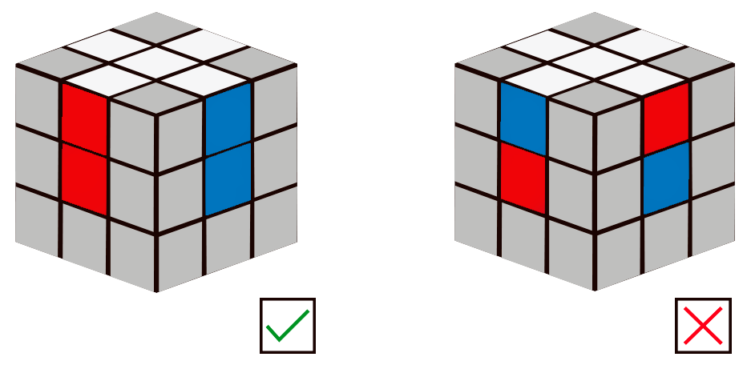
Esquinas
La resolución de las esquinas en el FL también es intuitivo y se puede resolver sin algoritmos
, pero en caso de necesitar ayuda extra, existe un buffer (Movimiento repetido) para
la correcta posición de las aristas. Para realizar el mismo, hay que elegir una esquina cualquiera que tenga el
color blanco y ubicarla debajo de su posición correcta del lado derecho, una vez ubicada aquí, hay que repetir el movimiento
R' D' R D hasta que la esquina esté posicionada correctamente. Recuerda este buffer, porque será de utilidad
en un futuro.
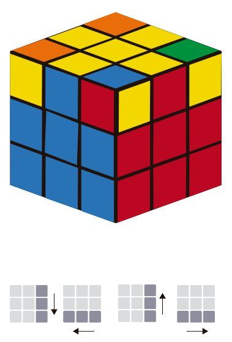
Aristas
Después de completar la primera capa, trabaja en la segunda capa colocando las aristas en sus posiciones
correctas sin alterar la primera capa. Aquí necesitarás aplicar un par de movimientos básicos (algoritmos)
para insertar cada arista en su lugar.
Para lograr esto, desde este momento tendrás que rotar tu cubo para que quede en la cara opuesta a la que estabas
armando, es decir, si estas resolviendo la blanca, tendrás que rotar a la amarilla. Desde este punto, tendrás que
encontrar aristas las cuales NO tengan el color de la cara opuesta (en este caso amarillo). Posteriormente, con la arista encontrada,
el color que tienes en frente deberás alinearlo con su respectiva cara, por ejemplo, si te quedó el color azul,
tendrás que alinearlo con la cara azul.
En este momento, tienes dos posibles casos, en el que tengas que insertar dicha arista en la izquierda
o en la derecha. Para esto te tendrás que posicionar en frente de la cara azul y efectuar alguno de los siguientes dos casos:
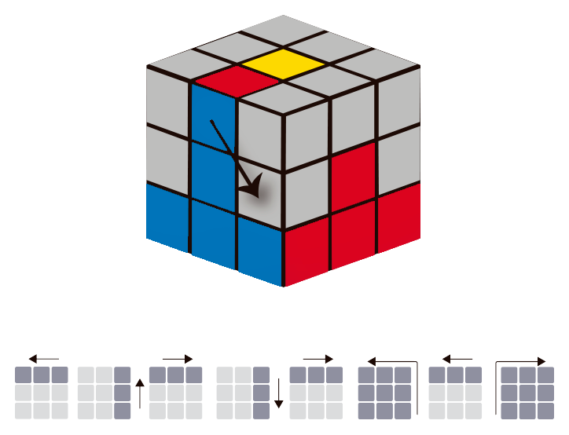U R U’ R’ U’ F’ U F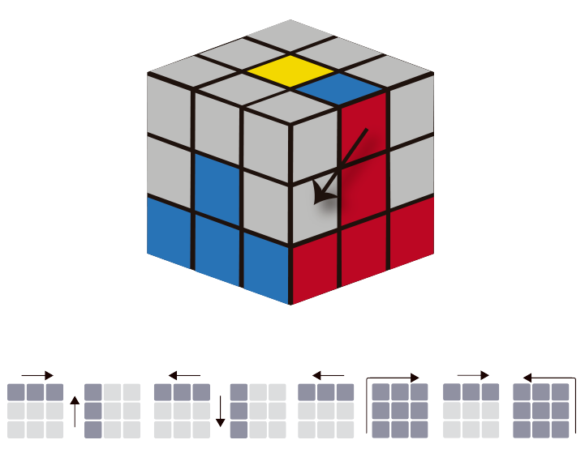U’ L’ U L U F U’ F’
2. Ultima capa
Cruz opuesta
Esta es de las partes más fáciles de la Última capa, consta en repetir un algoritmo (F R U R’ U’ F’)
un máximo de 4 veces para resolver la cruz de la última capa.
Para comenzar, con cada vez que se efectue este algoritmo, el cubo "avanza una fase", primero comienza desde un
punto, después una V, después una barra y finalmente, la cruz resuelta
completamente.
Distintas etapas o fases de la cruz
A continuación, se muestra cada una de las fases en su respectivo orden y con su respectiva notación para resolver dicho caso.
Es importante mencionar que uno no e la fase del punto, uno puede comenzar directamente en cualquiera. Incluso
podés tener suerte y saltearte este paso. Pase lo que pase, la línea de las "fases" va a seguir teniendo el mismo orden.
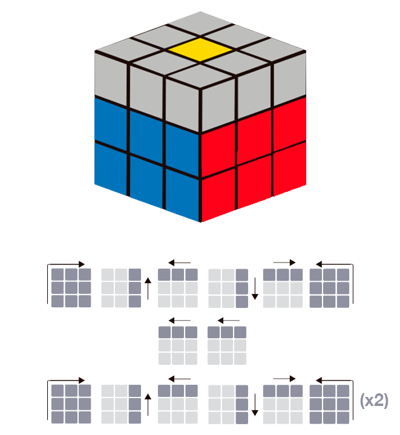F R U R’ U’ F’ —- U2 —- F R U R’ U’ F’ (x2)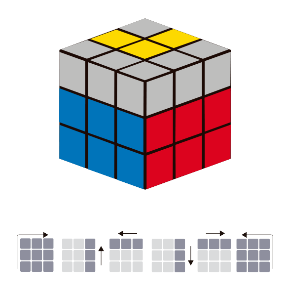F R U R’ U’ F’ (x2)
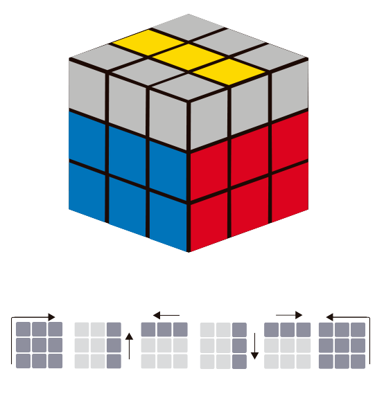F R U R’ U’ F’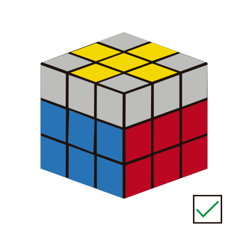Estado completo
Aristas opuestas
Para llegar a posicionar en su lugar correcto las aristas amarillas, primero que nada hay que observar el
caso que tocó, esto se hace moviendo la capa U hasta encontrar dos aristas que estén en su posición correcta.
Al lograr encontrarlas, hay dos posibles casos:
En el primero, te pueden tocar dos aristas juntas en su lugar correcto
En el segundo, las aristas están en su lugar correcto pero separadas.
Para el primero, hay que realizar el siguiente algoritmo una vez estando
posicionado con una arista mal posicionada en frente y otra mal posicionada a la derecha:
U R U R’ U R U U R’
En el otro caso, el algoritmo se realiza una vez y después se repite la búsqueda mencionada al principio.
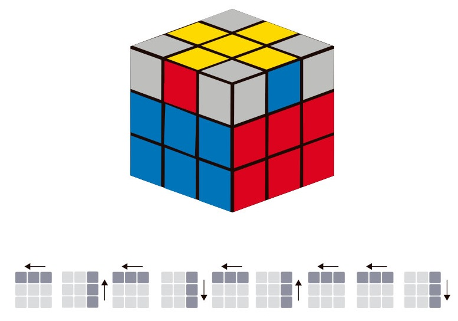U R U’ L’ U R’ U’ L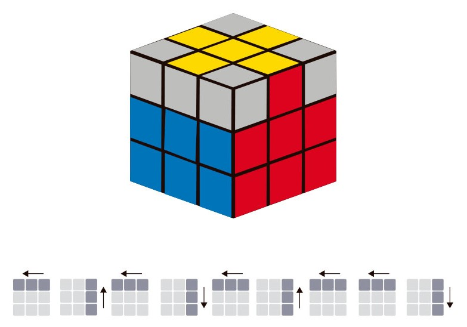U R U’ L’ U R’ U’ L (x2 o x3)
Esquinas opuestas
Para acomodar las esquinas de la última capa, primero, sin realizar el movimiento de ninguna capa y solamente rotando el cubo,
hay que encontrar una esquina que esté en su posición correcta,
independientemente de si está bien o mal orientada, luego a esa misma esquina, hay que ubicarla en la izquierda y ejecutar el siguiente algoritmo:
U R U’ L’ U R’ U’ L
Es importante mencionar que este algoritmo se debe realizar una o dos veces. Después de
la primera, verificar si se acomodaron las esquinas, en caso de no poder, repetir este paso nuevamente.
En el caso de no haber encontrado ninguna esquina orientada correctamente,
realiza el algoritmo en cualquier posición, luego busca una esquina que haya quedado bien orientada y luego
repite el paso anterior.
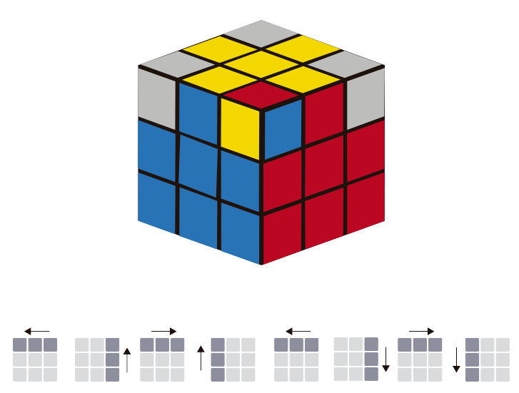U R U’ L’ U R’ U’ L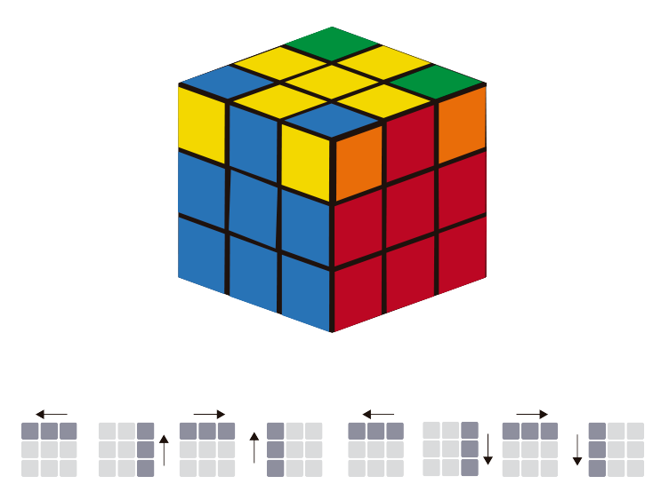U R U’ L’ U R’ U’ L (x2 o x3)
Orientación de esquinas
Para el paso final, ya deberías tener todas tus aristas orientadas correctamente y las esquinas en su posición
correcta pero orientadas incorrectamente.
¿Recordás el segundo paso de este tutorial? Ahora vuelve a ser necesario, ya que tendrás que efectuar el buffer
mencionado en ese momento. Solamente que, tendrás que cumplir dos cosas:
Debes intentar no ponerte nervioso, estás en el ultimo paso y al efectuar este algoritmo muchas veces
tu cubo puede parecer que se desarmó, pero cuando termines de orientar todas las esquinas, tu cubo estará resuelto.
Cuando orientes una esquina, mueve la capa superior antihorariamente (U') para tener la proxima esquina, si la esquina que te
tocó ya está orientada, repite nuevamente para encontrarte con la siguiente.
Luego continúa efectuando hasta que dicha esquina quede orientada, y realiza nuevamente U'. Continúa repitiendo esto hasta
que tengas tus 4 esquinas posicionadas correctamente.
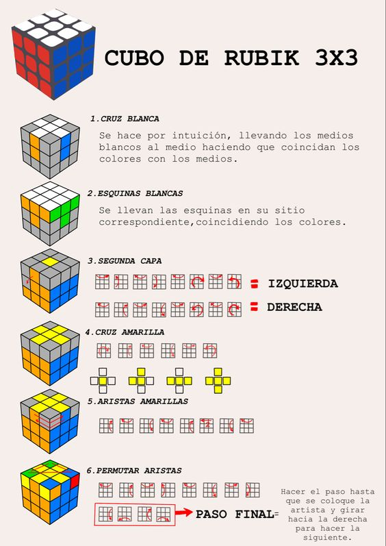
El método Principiantes fue creado por David Singmaster, el era un aficionado a los puzzle mecánicos y se dedicaba a su estudio.